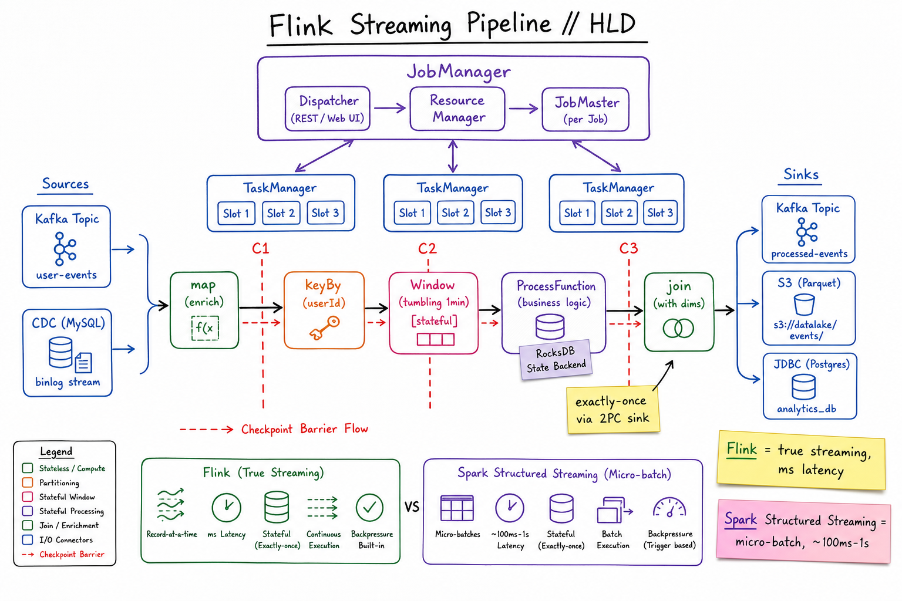
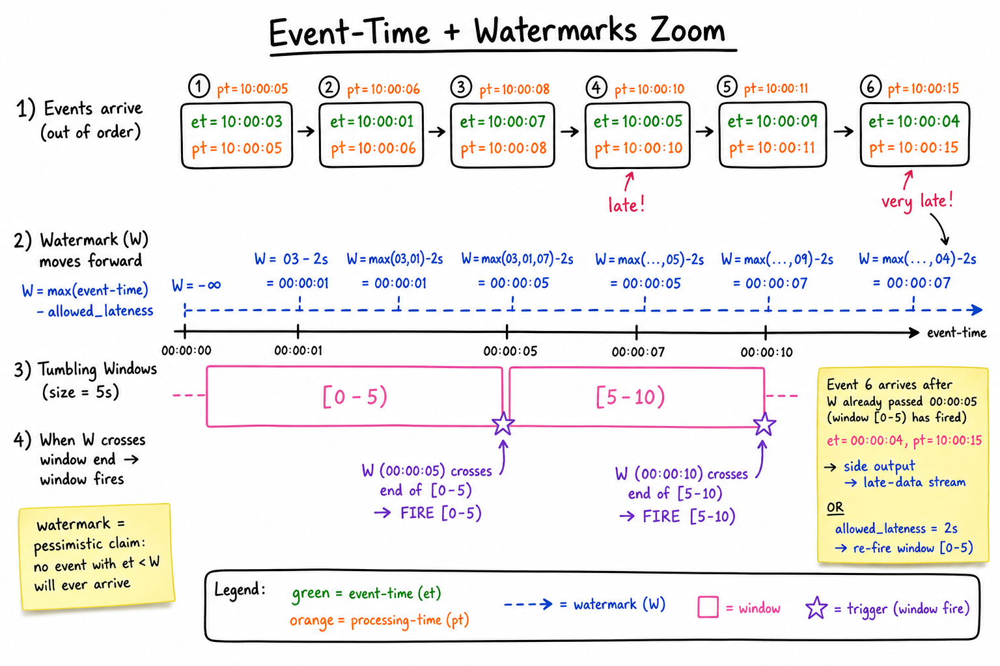

Flink & Spark Streaming // Deep Dive
The two dominant stream-processing frameworks. Flink does true record-at-a-time streaming with stateful exactly-once. Spark Structured Streaming runs micro-batches over Spark’s batch engine. Both unify SQL and code, but they sit at different points on the latency-vs-throughput curve.

Flink pipeline: sources → map → keyBy → windowed stateful op (RocksDB) → join → sinks. JobManager schedules; TaskManagers run slots. Checkpoint barriers cut consistent snapshots. Spark Structured Streaming uses the same operators but executes them in micro-batch triggers.
01 — Identity
Apache Flink — born streaming. Record-at-a-time pipeline DAG, native event-time, large stateful jobs (TBs of keyed state in RocksDB), millisecond latency, exactly-once via Chandy-Lamport checkpoints + two-phase-commit sinks.
Apache Spark Structured Streaming — born batch. The streaming dataset is treated as an unbounded table; queries run as a series of micro-batch jobs (typical 100ms–a few seconds) on the same engine that runs Spark batch. Newer “Continuous Processing” mode is still experimental.
Both expose SQL + DataFrame-style APIs for portability. The architectural split shows up in latency floor and how state is managed.
01a — Core Concepts
| Term | Meaning |
|---|---|
| Stream vs batch | Stream = unbounded, event-driven. Batch = bounded, scheduled. Both frameworks unify them. |
| Event-time | Timestamp from the event itself (when it happened). Stable across retries. |
| Processing-time | Wall-clock time the operator sees the event. Easy but non-deterministic. |
| Watermark | A monotonic claim: “no event with event-time < W will arrive”. Triggers windows; controls lateness. |
| Window | Tumbling (fixed, non-overlapping), sliding (fixed, overlapping), session (gap-based), global. |
| Keyed state | Per-key data (counter, list, map). Scoped to keyBy. Stored in RocksDB or heap. |
| Operator state | Per-task state (e.g. Kafka source offsets). Smaller. |
| Checkpoint | Periodic distributed snapshot of all state; used to recover after failure. Owned by Flink. |
| Savepoint | User-triggered checkpoint, retained, used for version upgrades / job migration. |
| Exactly-once | Each input record affects output exactly once even under failure. Needs idempotent or transactional sink. |
| Backpressure | Slow downstream forces upstream to slow. Flink uses credit-based flow control; Spark uses batch size rate-limiting. |
01b — API / Wire Surface
Flink DataStream (Java/Scala)
StreamExecutionEnvironment env = StreamExecutionEnvironment.getExecutionEnvironment();
env.enableCheckpointing(60_000); // every 60s
DataStream<Event> events = env.fromSource(KafkaSource.<Event>builder()...build(),
WatermarkStrategy.<Event>forBoundedOutOfOrderness(Duration.ofSeconds(5))
.withTimestampAssigner((e, ts) -> e.getEventTime()),
"kafka");
events
.keyBy(Event::getUserId)
.window(TumblingEventTimeWindows.of(Time.minutes(1)))
.aggregate(new ClickCounter())
.sinkTo(KafkaSink.<Result>builder()
.setDeliveryGuarantee(DeliveryGuarantee.EXACTLY_ONCE)
.build());
env.execute("click-aggregator");
Flink SQL
CREATE TABLE clicks (
user_id BIGINT, url STRING, ts TIMESTAMP_LTZ(3),
WATERMARK FOR ts AS ts - INTERVAL '5' SECOND
) WITH ('connector'='kafka', 'topic'='clicks', 'format'='json', ...);
INSERT INTO click_counts
SELECT user_id, TUMBLE_START(ts, INTERVAL '1' MINUTE) AS w_start, COUNT(*)
FROM clicks
GROUP BY user_id, TUMBLE(ts, INTERVAL '1' MINUTE);
Spark Structured Streaming
val clicks = spark.readStream
.format("kafka").option("subscribe", "clicks").load()
.selectExpr("CAST(value AS STRING)").as[String]
.map(parse)
val counts = clicks
.withWatermark("ts", "5 seconds")
.groupBy(window($"ts", "1 minute"), $"user_id")
.count()
counts.writeStream
.outputMode("update")
.trigger(Trigger.ProcessingTime("10 seconds")) // micro-batch
.format("kafka").option("topic", "click_counts")
.start()
The most important contract is the delivery guarantee on the sink. EOS requires a sink that supports two-phase commit (Kafka transactional producer, JDBC XA, idempotent file writer with rename).
02 — When to Use / When NOT to Use
| Use when… | Don’t use when… |
|---|---|
| You need event-time correctness with late data (analytics, billing, A/B tests). | A simple consumer doing CRUD per message — that’s just a Kafka consumer. |
| Per-key stateful computations: sessionisation, fraud rules, aggregations. | You want sub-millisecond latency — both add 10s of ms (Flink) to seconds (Spark). |
| Pipelines that must survive failures with exactly-once semantics end-to-end. | One-off ad-hoc queries — use the batch engine. |
| Mixing streaming with batch sources (enrichment from Hive, joins to static dims). | You have a 5-person team without distributed-systems on-call — both are heavy ops. |
| SQL-first analyst workflow on Kafka topics (Flink SQL / Spark SQL). | Use Kafka Streams (a library, not a cluster) if you just need windowed aggregation per service. |
03 — Architecture
Flink
JobManager (HA via ZK / K8s leader election) - Dispatcher : REST entry, accepts jobs - ResourceMgr : negotiates with YARN / K8s - JobMaster : per-job, schedules tasks, coordinates checkpoints TaskManager (N processes; each has “slots” = parallel slots) - Runs a chain of operators (subtasks) - Holds local state in RocksDB (off-heap, on local SSD) - Network shuffles via credit-based flow control
Spark Structured Streaming
Driver (Spark driver, holds query plan + checkpoint metadata) - Plans each micro-batch as a job - Schedules tasks on executors Executors (N JVM processes) - Read offsets from source - Compute the micro-batch (Catalyst-optimised) - Update state store (in-memory + HDFS-backed) per micro-batch - Write to sink Trigger: ProcessingTime(N), Once, AvailableNow, Continuous
State backends
- Flink RocksDB — off-heap, TB-scale, incremental checkpoints. Default for prod.
- Flink heap — faster, limited by JVM heap, full snapshots only.
- Spark HDFSBackedStateStore — in-memory map + delta logs to HDFS/S3 per micro-batch. Recovery replays the deltas.
- Spark RocksDB — available since 3.2 for very large keyed state.

Events arrive out-of-order with event-time vs processing-time skew. The watermark W = max(event_time) - allowed_lateness moves forward; when it crosses a window’s end, the window fires. Events arriving after that go to a side output or trigger a re-fire if allowed_lateness permits.
04 — Event-Time + Watermarks (the Late-Data Problem)
Real events arrive late: mobile clients reconnect, queues buffer, regions go offline. If you bucket by processing-time, the same event lands in different buckets on a rerun — correctness depends on the wall clock. Event-time fixes this, but introduces a question: when is a window “done”?
A watermark is the framework’s pessimistic claim: “I’ve seen enough; no event with event_time < W will arrive.” Common formula: W = max(event_time seen) - allowed_lateness. When W crosses a window’s end, the window fires and emits a result.
Late data — three options
- Drop (default). Cheap, lossy.
- Side output (Flink). Route late events to a separate stream for reconciliation.
- Allowed lateness. Keep window state alive past firing; on late arrival, re-fire with updated result (downstream must accept updates).
The interview question: “What if a phone is offline for 6 hours and sends 6 hours of events?” — You either accept loss (watermark passed long ago, drop), or you set allowed_lateness = 6h (state cost × 6h), or you run a daily reconciliation batch and stream becomes a fast approximation.
05 — Windows Compared
| Type | Definition | Use case |
|---|---|---|
| Tumbling | Fixed length, non-overlapping. [0,60), [60,120), ... | Per-minute counts, hourly reports. |
| Sliding | Fixed length, overlapping every step. size=60s slide=10s → 6x state | Rolling 1-min average updated every 10s. |
| Session | Gap-based. Closes when no event for gap seconds. | User sessions, conversation threads. |
| Global | One window forever; user defines triggers. | Custom logic (count-based, punctuated). |
06 — Exactly-Once via Two-Phase Commit
End-to-end EOS = source + state + sink all participate. Flink’s scheme:
1. SOURCE : Kafka source records offsets in the checkpoint state. 2. STATE : Operator state (RocksDB) flushed to checkpoint storage. 3. SINK : "Pre-commit" the output (Kafka: produce inside a transaction). 4. JobManager declares checkpoint complete after ALL tasks ack. 5. SINK 2pc COMMIT: Kafka transactions committed atomically. Failure between 3 and 5 → on recovery, sink aborts the open transaction; last completed checkpoint is replayed. Producer fencing prevents the dead job from committing a stale transaction.
What “exactly-once” actually means
Each input record affects sink state exactly once relative to the checkpointed run. Side effects in user code (writing to an external DB without a TX) are not covered — make them idempotent (upsert by event_id) or run them through a transactional connector (JDBC XA, Iceberg, Delta).
Spark Structured Streaming achieves micro-batch EOS via idempotent sinks + offset commits inside the same checkpoint — subtly different mechanism, same observable behaviour.
07 — Checkpoints & State Recovery
Flink checkpoint mechanics (Chandy-Lamport)
- JobManager injects a barrier with id N into every source stream.
- Barrier flows through the DAG. When an operator sees barriers from all input channels (aligned), it snapshots its state to durable storage (S3/HDFS).
- When barrier reaches all sinks & all ack, the checkpoint is committed.
- On failure, all operators reset to last completed checkpoint and replay from source offsets stored in that checkpoint.
Checkpoint vs Savepoint
| Checkpoint | Savepoint | |
|---|---|---|
| Trigger | Automatic, every N seconds | Manual via CLI |
| Retention | Last K (default 1) retained | Kept until you delete |
| Format | Optimised for fast recovery | Forward-compatible, version-portable |
| Use | Crash recovery | Job upgrade, A/B, migration to new cluster |
State TTL
Without TTL, keyed state grows forever. Set StateTtlConfig per state descriptor so old keys (e.g. inactive user sessions) get cleaned up incrementally. Critical for long-running jobs.
08 — Stream Joins
| Join type | Semantics | State cost |
|---|---|---|
| Interval join | L joined with R where L.ts - 5min ≤ R.ts ≤ L.ts + 5min | Bounded by interval × rate |
| Window join | Co-group both sides in the same tumbling window, cross-product within. | Per-window |
| Temporal table join | Stream joined to a slowly-changing dimension table by event-time. “What was the price then?” | Dim cached |
| Regular SQL join | Full materialised state on both sides; emits retractions on changes. | Unbounded — danger |
Without bounding, two unbounded streams joined as a regular SQL join means both sides must be remembered forever. Always prefer interval / window / temporal joins for streaming workloads.
09 — Flink vs Spark Structured Streaming
| Flink | Spark Structured Streaming | |
|---|---|---|
| Execution model | Continuous / record-at-a-time | Micro-batch (continuous mode experimental) |
| Min latency | ~10ms (sub-ms with tuning) | ~100ms–a few seconds |
| Throughput | Excellent, lower variance | Excellent, but micro-batch overhead at low latency |
| State backend | RocksDB (TB-scale, incremental) | HDFS state store; RocksDB optional since 3.2 |
| Watermarks & event-time | First-class, fine-grained per-source | Single watermark per query; limited tuning |
| Exactly-once sinks | 2PC connectors mature (Kafka, Pulsar, JDBC, Iceberg) | Idempotent-sink + offset-commit pattern; Kafka EOS sink available |
| Batch reuse | Same DataStream API works in batch mode | Native: it’s Spark, so batch is the default |
| SQL maturity | Strong (continuous SQL since 1.10) | Excellent (same Spark SQL) |
| Ecosystem | Streaming-first; weaker ML | Massive: MLlib, Delta, batch jobs |
| Operational complexity | JobManager HA, RocksDB tuning | Driver SPOF, micro-batch tuning |
| Pick when | Sub-second SLA, complex stateful, late-data is real | Already on Spark, batch + light streaming, second-level latency OK |
10 — Flink CDC Connectors
Flink CDC reads database change logs (MySQL binlog, Postgres WAL, MongoDB oplog) directly — bypassing Debezium-on-Kafka — and emits them as a stream of changelog rows. Combined with Flink SQL it powers:
- Real-time OLAP: stream Postgres → Iceberg / ClickHouse views.
- Search index hydration: stream MySQL → Elasticsearch.
- Stream-stream joins where one side is a CDC-fed dim table.
The wire format is changelog: +I insert, -U/+U update before/after, -D delete. Operators must handle retractions (group-bys emit -/+ on each change).
11 — Operational Concerns
Sizing
- Parallelism = max throughput / per-task throughput. Cap by source partition count (Kafka partitions = max useful parallelism per source).
- TaskManager slots ≈ vCPUs. Each subtask in a pipeline shares one slot with the rest of its chain.
- Checkpoint interval — trade-off: small = fast recovery, more I/O; large = less I/O, more replay on crash. 30–120s is typical.
- RocksDB block cache: tune off-heap memory. State that doesn’t fit goes to disk → latency spikes.
Watch the symptoms
- Backpressure ratio > 0.5 on an operator → that operator is the bottleneck; downstream is slow.
- Checkpoint duration creeping up → state growing without TTL, or RocksDB compaction stalls.
- Watermark stalled → an idle source partition blocks the whole job. Use
WatermarkStrategy.withIdleness().
12 — Usage Patterns (back to A cheatsheets)
- Ad Click Aggregator — canonical Flink job: event-time tumbling windows, exactly-once into Druid/ClickHouse, late-data side output for billing reconciliation.
- Uber Surge Pricing — per-hex sliding windows over GPS pings; stateful trip / driver join via Flink.
- FB Live trending — comment-rate sliding windows feeding a leaderboard.
- Proximity Service — CDC of business updates streamed into the search index.
- Notification System — rate-limit + per-user de-dup window before fanout.
13 — Alternatives
| Alternative | When to pick |
|---|---|
| Kafka Streams | A library, not a framework. Runs in your service JVM. Good for per-team streaming microservices, no separate cluster, but limited cross-job sharing & smaller state. |
| Apache Beam | Unified SDK that compiles to Flink / Spark / Dataflow. Great if you want runner portability; loses some Flink-specific knobs. |
| Google Dataflow | Managed Beam on GCP. The reference implementation; autoscaling. Lock-in. |
| Materialize / RisingWave / ksqlDB | Streaming SQL databases — maintain incrementally updated materialised views over Kafka. Easier than running Flink for analyst-friendly use cases. |
| ClickHouse + Kafka engine | Insert-time aggregation, no event-time, no exactly-once. Good when “eventually consistent counts” suffice. |
| Apache Storm / Samza | Older streaming systems. Don’t pick them in 2026 unless you already run them. |
14 — Interview Q&A
Event-time vs processing-time — why do we need both?
Processing-time is what your server’s clock sees. It’s simple but non-deterministic: a replay produces different windows. Event-time is the timestamp on the event itself — deterministic, but events arrive out of order, so you need watermarks to know when a window can fire. Use event-time for correctness (billing, analytics) and processing-time only for non-critical wall-clock alerting.
What is a watermark, mechanically?
A monotonic timestamp the framework injects into the stream meaning “no event with event_time < W will arrive”. Generated per source (e.g. W = max(event_time) - 5s). Operators advance their notion of time using the minimum watermark across all upstream channels — one slow partition holds back the whole job, which is why idle-source handling matters.
How does Flink achieve exactly-once?
Chandy-Lamport checkpoints take a consistent distributed snapshot (sources record offsets, operators flush state to S3). Transactional sinks (e.g. Kafka producer transactions) pre-commit output as part of the checkpoint. The JobManager declares the checkpoint complete only after every task acks, and then signals the sink to commit the transaction. On failure, the open transaction is aborted, last completed checkpoint is replayed, and producer fencing prevents the zombie from committing.
Flink vs Spark Structured Streaming — which would you pick and why?
Pick Flink when latency must be sub-second, state is large (10s of GB+), and event-time correctness matters — the model is native and the connectors are mature. Pick Spark when the team is already on Spark, latency floor of ~1s is fine, and you want unified batch + streaming with the broader ML ecosystem. The architectural gap (true streaming vs micro-batch) has narrowed but Flink still owns the <100ms regime.
What happens to late events?
Three options. (1) Default: dropped silently once watermark passes the window’s end — cheap, lossy. (2) allowed_lateness: window state lives past firing, late events trigger a re-fire (downstream must accept retractions / upserts). (3) Side output: route late events to a separate stream for batch reconciliation. The choice depends on how much state cost you accept and whether downstream is idempotent.
Tumbling vs sliding vs session window?
Tumbling = fixed length, non-overlapping. Simplest, lowest state. Sliding = fixed length, overlap every step; state multiplies by length/step. Session = closes after gap of inactivity; state per-key is small but window can span hours. Pick tumbling for billing, sliding for moving averages, session for user behaviour.
How does Flink handle a TaskManager crash?
JobManager detects via heartbeat. Failed subtasks are restarted on a healthy TaskManager (or new one acquired from K8s/YARN). Restored subtasks load their keyed state from the latest completed checkpoint in S3. Source offsets in that checkpoint reposition Kafka consumers. Once aligned, the job resumes from exactly where the checkpoint cut. Typical recovery: 10s–a few minutes depending on state size.
What’s the difference between a checkpoint and a savepoint?
Checkpoints are owned by Flink, periodic, retained briefly, optimised for fast recovery. Savepoints are user-triggered, retained until you delete, and use a forward-compatible format so you can upgrade the job version, change parallelism, or migrate clusters. You take a savepoint before deploying a new job version, redeploy, and start from it.
Why might checkpoints start failing or taking longer?
Most common: state size grew without TTL (sessions never close, keys never expire). RocksDB compaction can’t keep up → barriers stall. Network or S3 backpressure. Backpressure in the pipeline (slow downstream) causes barrier alignment to wait at slow operators. Fix: add StateTtlConfig, increase incremental checkpoint quota, switch to unaligned checkpoints for backpressured jobs.
How do you join two streams without unbounded state?
Use a bounded join: interval join (R.ts within [L.ts-5m, L.ts+5m]) bounds state to the interval × rate; window join co-groups both sides per window; temporal table join joins a stream to a versioned dimension. Naive SQL L JOIN R on two unbounded streams retains both forever — correct but operationally untenable.
When does Spark Structured Streaming win over Flink?
(1) You’re already on Spark and don’t want a second engine. (2) Workloads that mix heavy batch + light streaming on the same data (same DataFrame code). (3) You need MLlib / Delta Lake / extensive Python ecosystem. (4) Latency floor of ~1s is fine. The micro-batch model is also operationally simpler — one job per query, easier to reason about.
SDE-2 vs SDE-3 differentiation?
| SDE-2 | SDE-3 |
|---|---|
| Knows windows, watermarks, Flink vs Spark micro-batch | + Chandy-Lamport barrier alignment, two-phase-commit sinks & producer fencing, state TTL & RocksDB tuning, savepoint upgrade flow, idle-source watermark stalls, retraction semantics for CDC, why ksqlDB / Materialize exist, backpressure ratio diagnosis |